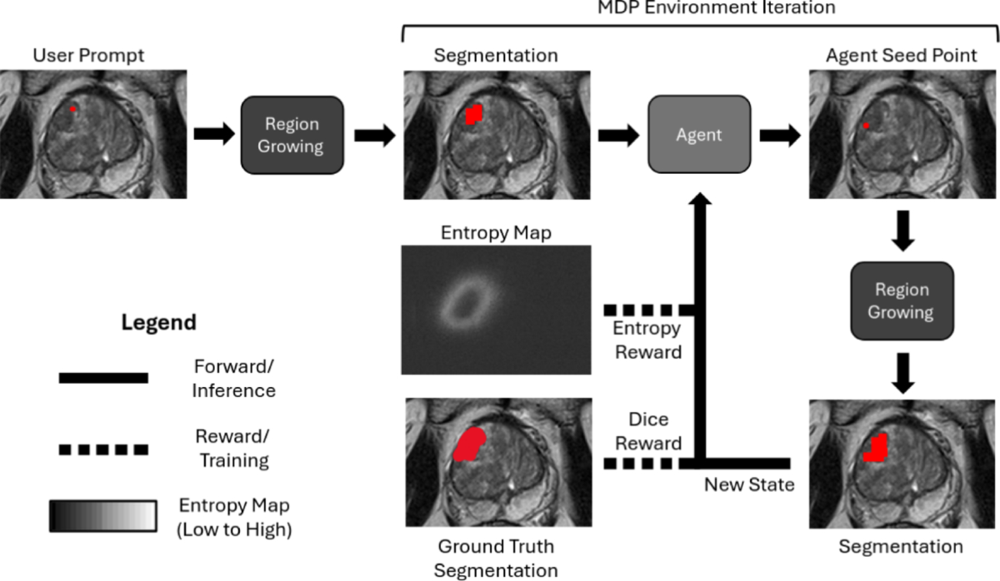
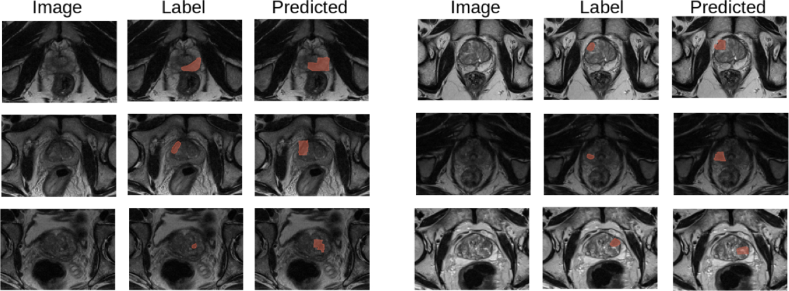

透明容器倒水（真机）
98%+
纯感知方案，双臂循环跑测基本无失败
Overview
从数据采集到策略上机的完整链路：多源遥操作采集、自动化质检、策略训练评测， 再到真实机器人上的高精度、低延迟执行。
透明容器倒水（真机）
98%+
纯感知方案，双臂循环跑测基本无失败
多材质容器抓取
99%+
透明、反光材质与光照变化下的泛化
亚毫米级孔板抓放
95%+
基于 FlowMatching 的长程精细装配
已发表论文
6 篇
其中 4 篇第一作者
从开关实例分割、按压点识别与手眼标定，到机械臂按压、视觉复核和云端任务联调， 完成楼宇开关灯任务的真机部署。
通过相机标定对齐画面与机器人坐标，在同一工程中支持画面选点导航和物体识别后导航到达， 连接固定相机感知与移动机器人执行。
使用 GPT-6 Astra 辅助 Blender 展厅场景建模与迭代，完成空间布局、材质灯光和相机漫游， 输出可视化展示视频。
基于 RGB-D 与点云融合的纯感知方案，完成透明容器分割、位姿估计、瓶口与抓取点预测， 支撑双臂循环倒水任务。
孔板抓放至孔槽的亚毫米级精度任务，系统对比多类策略模型并优化插入阶段控制。
可提示区域探索用于前列腺癌分割，硕士毕业设计，已发表于 IJCARS。
多源机器人数据采集与质检管线，覆盖 MOCAP、3D 鼠标、VR 遥操作、拖动示教与 UMI。
基于 NVIDIA IsaacLab 的多机器人仿真环境，训练 PPO 策略并评估 sim-to-real 可迁移性。
在 TUM、KITTI 与自录视频上做消融式评估，室内轨迹精度 <0.11m RMSE。
Education
伦敦大学学院 University College London
硕士 · 医学机器人与人工智能
2024.09 – 2025.09 伦敦，英国
一等荣誉学位 First-class Honours
西交利物浦大学 Xi'an Jiaotong-Liverpool University
学士 · 智能机器人工程
2020.09 – 2024.09 苏州，中国
一等荣誉学位 · GPA 前 5%
Experience
从嵌入式与机器视觉起步，逐步转向机器人学习与真实机器人系统的端到端研发。
机器人抓取算法工程师 现任
上海有限公司 · 上海，中国
2026.07 – 至今
具身智能算法工程师
源络科技（上海）有限公司 · 上海，中国
2025.10 – 2026.07
研究助理
西交利物浦大学 · 苏州，中国
2023.11 – 2024.07
测试工程师
Relx Elsevier 上海技术中心 · 上海，中国
2023.05 – 2023.11
研究助理 / 制造工程师
MagAssist · 苏州，中国
2022.06 – 2023.03
嵌入式软件工程师
NIIC 国讯芯微（苏州）科技有限公司 · 苏州，中国
2021.06 – 2021.09
Projects
精选机器人操作、视觉导航、3D 场景建模与机器人学习项目，结合真机演示和可视化成果展示。
当前工作 · 2026.08 – 2026.10 · 真机开发与部署
面向楼宇巡检中的开关灯任务，完成从视觉感知、手眼标定到机械臂按压的开发与车端部署， 并参与串联导航到位、开关操作、视觉复核和结果回传的任务流程。
当前工作 · 2026.10 · 画面选点与物体识别导航
将固定相机画面中的目标转换为机器人可执行的空间位置，在同一视觉导航工程中， 支持人工选点导航与识别目标物体后导航到达两种方式，完成从视频观测到机器人行动的连接。
当前工作 · 2026.09 · Blender 场景建模探索
探索大语言模型辅助 3D 内容制作，使用 GPT-6 Astra 结合 Blender 完成展厅场景建模与迭代， 将场景构想转化为可展示的空间布局和 360° 漫游视频。
源络科技 · 2025.10 – 2026.07 · 上海，中国
面向透明、反光容器的纯感知抓取与倒水方案，无需额外标记或先验模型， 在光照变化与动态背景下保持稳定，已作为展会 demo 长时间连续运行。
源络科技 · 2025.10 – 2026.07 · 上海，中国
孔板抓取并插入孔槽的精细装配任务，公差要求达亚毫米级； 系统对比多类模仿学习与策略方法后，以 FlowMatching 方案取得最佳真机表现。
源络科技 · 2025.10 – 2026.07 · 上海，中国
支撑多任务、多平台机器人学习的数据基础设施，把「采集 → 质检 → 训练格式」做成可复现流程， 让数据问题在进入训练之前就被拦住。
硕士毕业设计 · UCL · 2024.09 – 2025.09 · 伦敦，英国
把三维医学图像分割建模成序贯决策问题，用可提示的区域探索降低标注依赖， 以最小标注工作量达到专家级勾画质量；成果以第一作者发表于 IJCARS。 查看论文 ↗


图片取自本人论文 Yang et al., IJCARS 2026 ，依据 CC BY 4.0 许可使用。
独立项目 · 2025.03 – 2025.05 · 伦敦，英国
独立项目 · 2025.01 – 2025.04 · 伦敦，英国
独立项目 · 2025.02 – 2025.03 · 伦敦，英国
独立项目 · 2023.09 – 2024.07 · 苏州，中国
UCL / XJTLU · 2022 – 2025
围绕医学影像生成、质量评估与信号数字化的一组研究型项目。
XJTLU · 汇川技术 · 2021 – 2024
Publications
6 篇已发表论文，其中 4 篇第一作者。
可提示区域探索分割实现最小工作量专家级前列腺癌勾画
Promptable segmentation with region exploration enables minimal-effort expert-level prostate cancer delineation
International Journal of Computer Assisted Radiology and Surgery (IJCARS), vol. 21(5), pp. 997–1005, 2026 · IPCAI 2026 接收
表面缺陷分类：利用 Transformer 与迁移学习提升工业应用精度
Surface defect classification: leveraging transformer and transfer learning models for enhanced precision in industrial applications
The International Journal of Advanced Manufacturing Technology, vol. 139, pp. 4141–4152, 2025
第一作者 已发表 DOI
表面缺陷检测：一种基于特征迁移学习的方法
Surface Defect Detection: An Approach Utilising Feature-Based Transfer Learning
Robot Intelligence Technology and Applications 8 (RiTA 2023), Springer LNNS, pp. 58–65, 2024
第一作者 已发表 DOI
不同特征提取模型在 CT-ICH 数据分析中的分类器性能变异性研究
Performance Variability of Classifiers with Different Feature Extraction Models in CT-ICH Data Analysis
Computer Methods in Biomechanics and Biomedical Engineering: Imaging & Visualization
第一作者 已发表
改善糖尿病视网膜病变分类：基于 MobileNet 特征的迁移学习与逻辑回归研究
Improving Diabetic Retinopathy Classification: A MobileNet Feature-Based Transfer Learning with Logistic Regression Investigation
Robot Intelligence Technology and Applications 8 (RiTA 2023), Springer LNNS, pp. 147–153, 2024
第二作者 已发表 DOI
基于特征迁移学习的脑肿瘤分类
The Classification of Brain Tumours by Means of Feature-Based Transfer Learning
Robot Intelligence Technology and Applications 8 (RiTA 2023), Springer LNNS, pp. 123–128, 2024
第二作者 已发表 DOI
Talk
报告主题：基于迁移学习的自动化制造缺陷检测 · 2023.12 · 苏州，中国
Awards
2023
二等奖 Honorable Mention
数学建模竞赛 Predicting Wordle Results · 在线
2019
Innovation in Control Award
FIRST 机器人竞赛世界锦标赛 · Rockwell Automation 赞助 · 休斯顿，美国
2019
世锦赛决赛亚军 Regional Finalists
FIRST 机器人竞赛世界锦标赛 · 休斯顿，美国
2018
Rookie All-Star Award
FIRST 机器人竞赛（FRC）· 深圳，中国
2018
工业设计奖 Industrial Design Award
中国机器人挑战赛（CRC）· 深圳，中国
2018
工业设计奖 Industrial Design Award
FTC 机器人竞赛 · 郑州，中国
Stack
机器人学习与真机部署中实际使用的方法、工具与工程实践。
面向真实机器人操作任务的策略学习方法。
以感知驱动的抓取与操作决策。
真实机器人平台的集成与调试。
仿真环境搭建与 sim-to-real 评估。
开发、部署与协作工具链。
医学影像与工业视觉方向的研究积累。